In India, communal living has been deeply rooted in cultural heritage and social fabric for centuries. When we think of villages, a vivid image comes to mind – bustling marketplaces, the village square with an ancient banyan tree where elders share their wisdom and children play games. Agriculture, as the backbone of the society, unites neighbours in sowing, tending, and harvesting crops. Festive occasions are a delightful display of collective effort, where every household contributes to creating a sensory feast, highlighting shared resources and cultural heritage.
The houses in the villages are thoughtfully clustered around courtyards, fostering unity and serving as hubs for resource sharing. Neighbours freely share everything from cooking ingredients to farming tools, ensuring the well-being of all. These rural realms epitomise the essence of communal living, transforming mere dwellings into nurturing homes and weaving villagers into a unified tapestry.

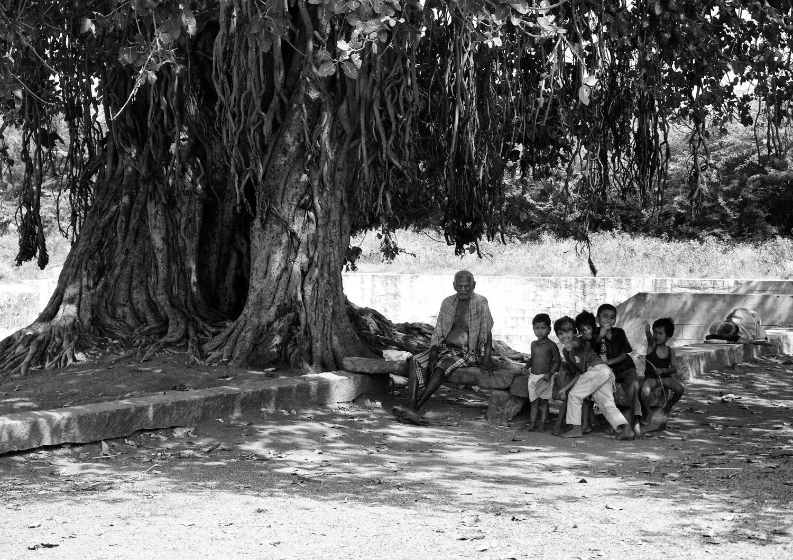
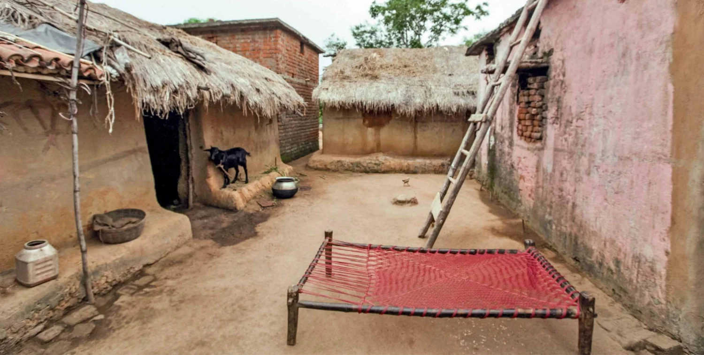
With the advent of industrialisation and consequent urbanisation, people migrated to urban centres from rural areas, carrying with them the communal living practices and traditions from their village upbringing, thus perpetuating the spirit of collective living in the urban environment. This migration marked the birth of “mohallas” in the North India and “vataras” in the South, where the spirit of collective living flourished within the urban landscape.
Mohallas were characterised by clusters of homes surrounding central courtyards, creating a sense of intimacy and shared space. The colourful walls and doors of the homes, the sound of children playing in the courtyards, and the aroma of street food being cooked and shared among neighbours all contributed to the vibrant community setting. These courtyards served as focal points for social interactions, bringing together families and neighbours.
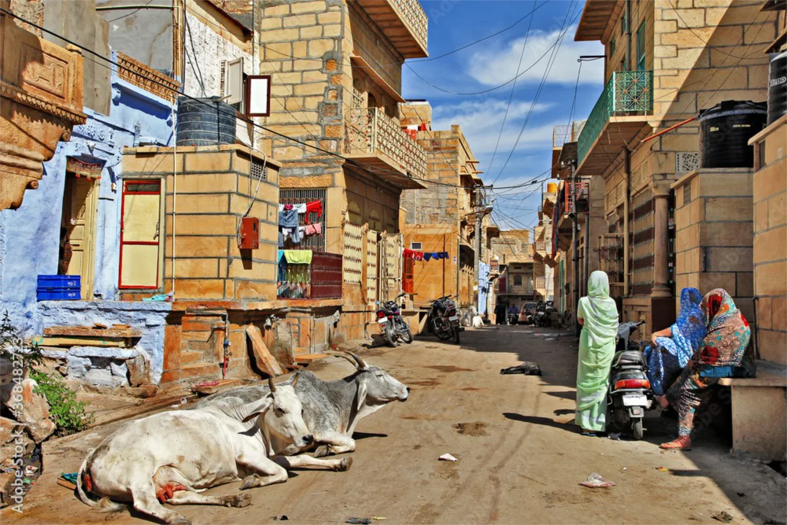
On the other hand, vataras were designed as interconnected homes, highlighting the close connections between residents and facilitating a strong sense of collective identity. The homes were arranged in a circular or square pattern, with a central open space for gatherings and events. The homes were designed to share walls and roofs, creating a sense of interconnectedness and interdependence among residents. The layout of vataras promoted close ties and mutual support among neighbours, fostering a tightly-knit community network. Thus, mohallas and vataras acted as modern-day extensions of the communal living ingrained in Indian society.
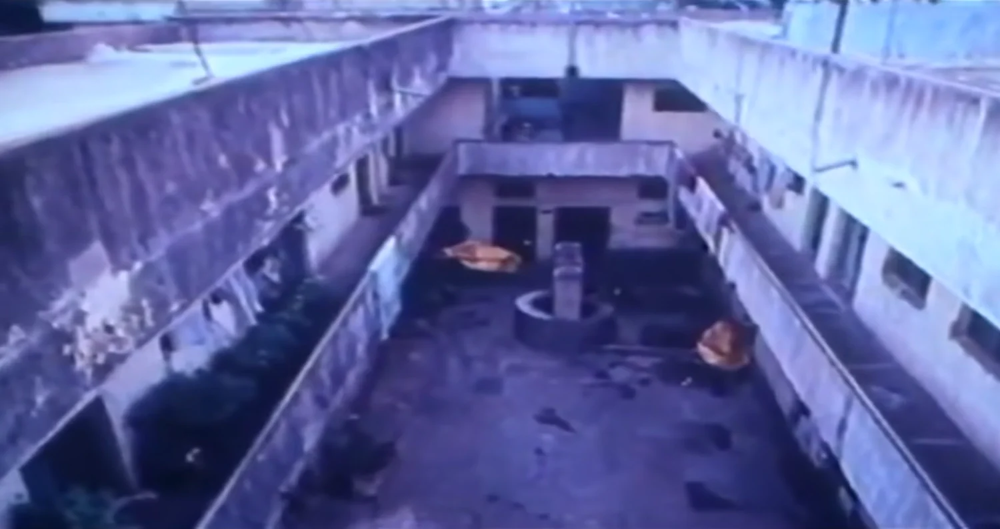
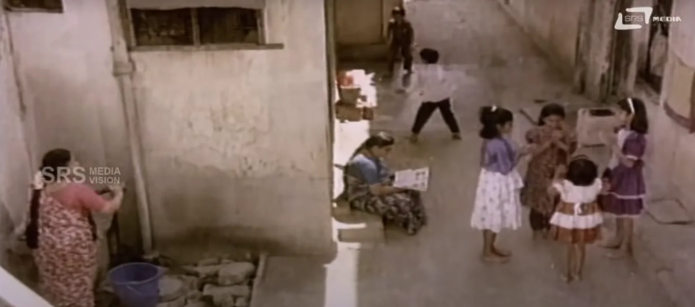
Shifting paradigms
However, in recent times, the landscape of group housing in India has experienced a significant shift. The rise of real estate-driven development has given birth to numerous challenges in the realm of group housing. Affordability concerns have led developers to reduce living spaces, resulting in cramped and inadequate accommodations. The Floor Space Index (FSI), initially intended as a guideline, has become a magic number, with developers focusing solely on maximising profits by increasing density rather than prioritising the well-being of residents. This approach not only compromises the quality of life but also fails to consider the long-term social, environmental, and economic costs associated with such developments.
The lack of community-oriented design, inadequate amenities, and limited green spaces have diminished the sense of belonging and well-being among residents. The social fabric that once characterised group housing has been replaced by an individualistic and disconnected living experience.
Moreover, the environment has become a victim of uncontrolled development, with depleting green cover, diminishing groundwater resources, and the growing impacts of climate change acting as alarming indicators of the need for change.
Community-driven approaches for sustainable cities
With an acute awareness of the diminishing social milieu in growing cities, GoodEarth has been at the forefront of creating sustainable communities deeply rooted in cultural essence for almost four decades. The homes at GoodEarth go beyond individual units; they are integral parts of a larger community consisting of different house typologies, nestled in rows along winding roads. Designed with a unified material palette that includes mud blocks, local stones, and timber, each home retains its distinct style and individuality, reflecting the personal touch of the homeowners.
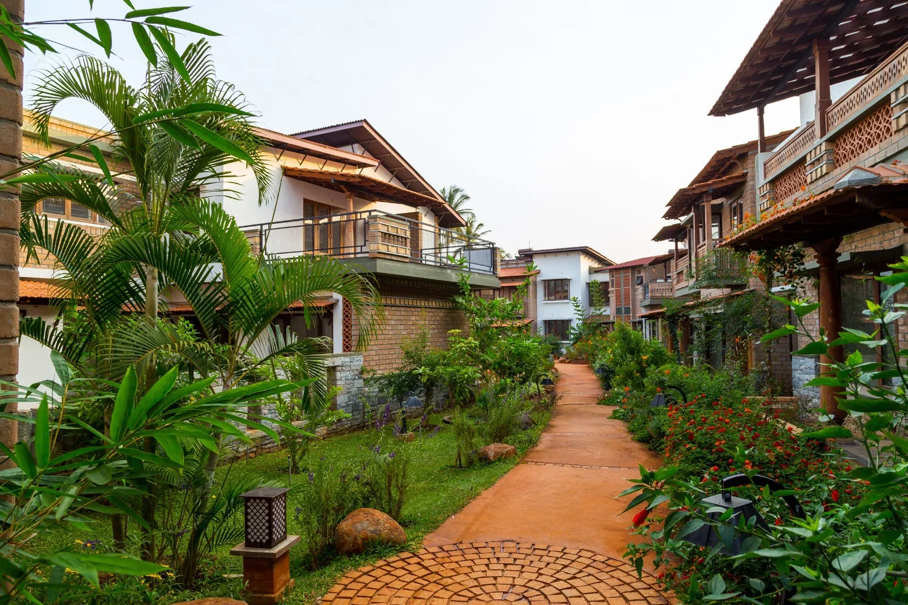
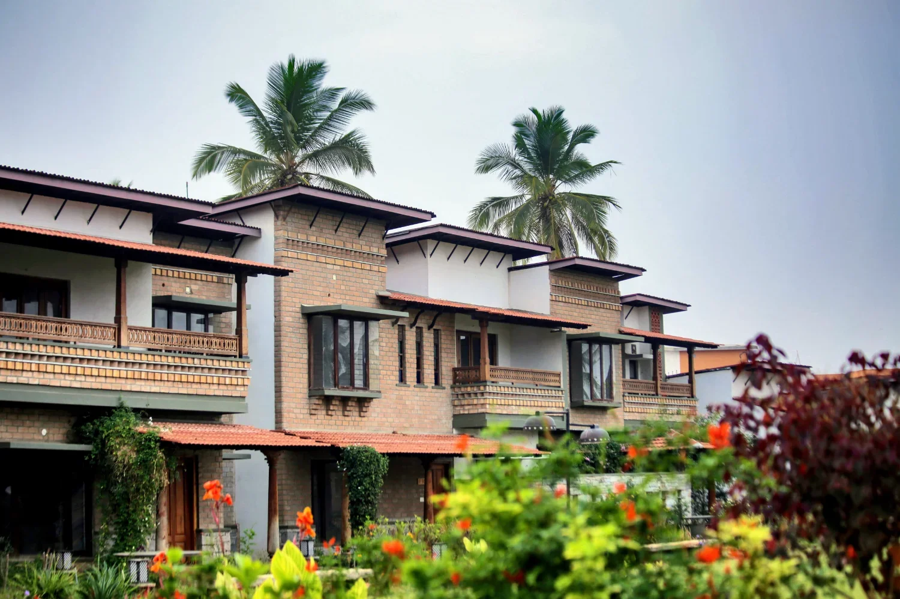
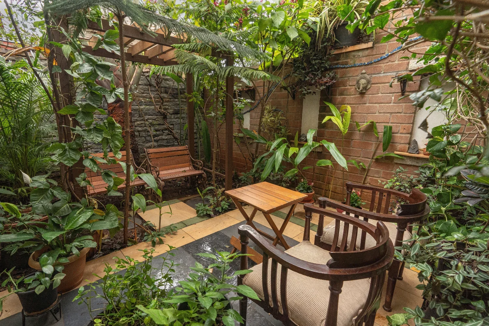
Challenging the conventional norm, GoodEarth dedicates an impressive 70% of the land as lung spaces, serving both individual and collective purposes. Each house features its own courtyards or gardens, providing residents with private sanctuaries where they can find solace. Simultaneously, the houses collectively share expansive central parks, fostering a strong sense of community and togetherness. These open spaces play a pivotal role in promoting social interaction and community bonding.
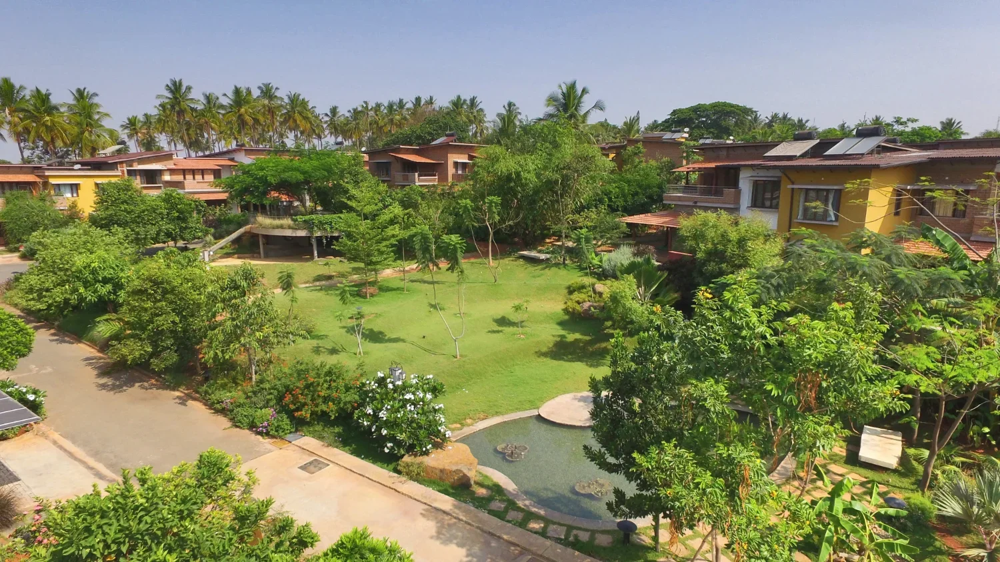
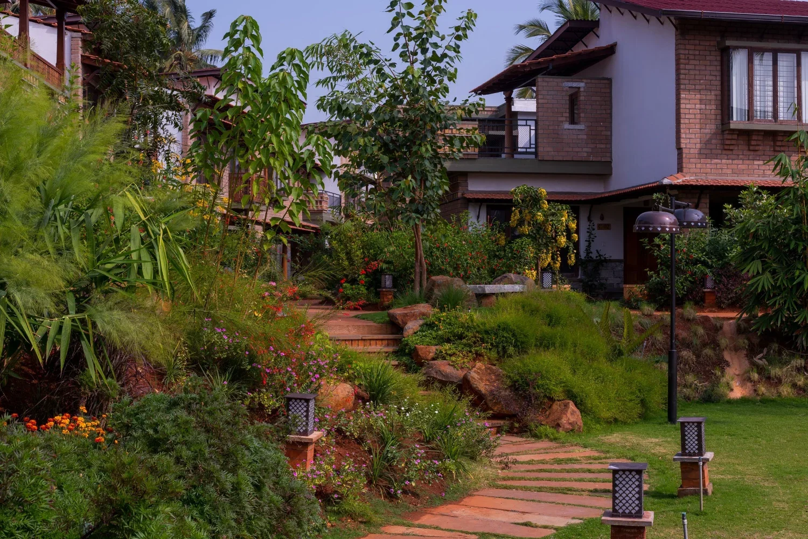
By seamlessly integrating time-tested practices and traditional materials into modern homes, including open floor plans that cater to the functional needs of residents, GoodEarth has revolutionized the concept of collective living for urban dwellers. This holistic approach serves as an inspiring blueprint for the creation of sustainable and harmonious cities. It places a strong emphasis on the well-being of the community as a whole, while also prioritizing the preservation of the environment for future generations.
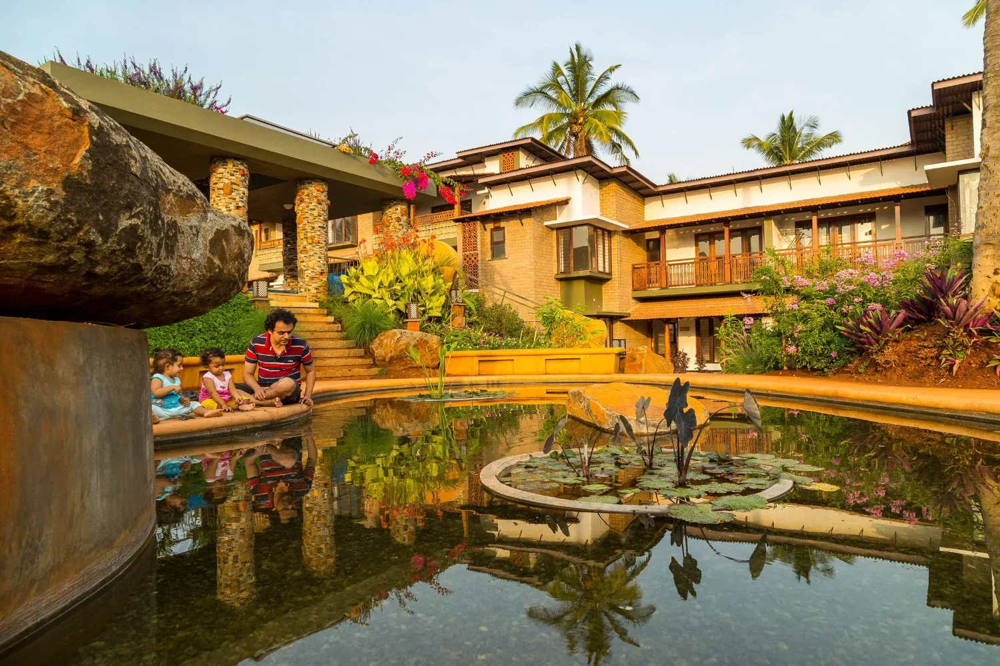
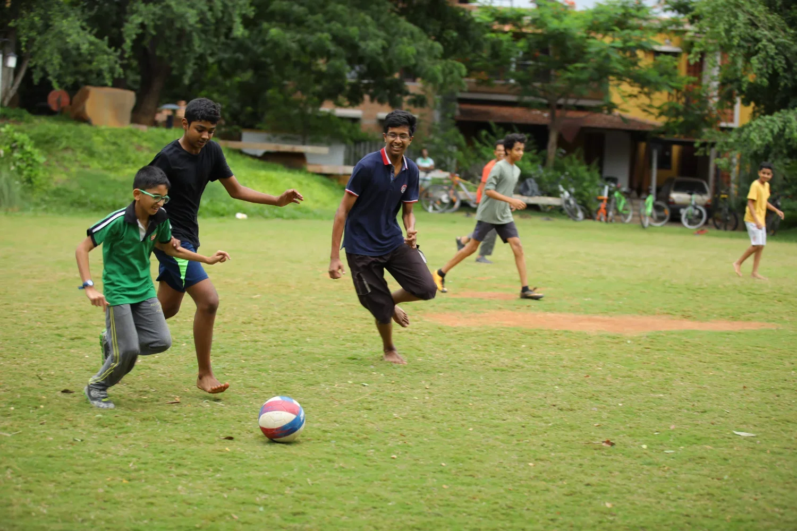
Cohabitation is more than mere coexistence; it is a profound recognition of our interconnectedness and a call to actively engage in nurturing both our community and the environment we inhabit.


Leave A Comment